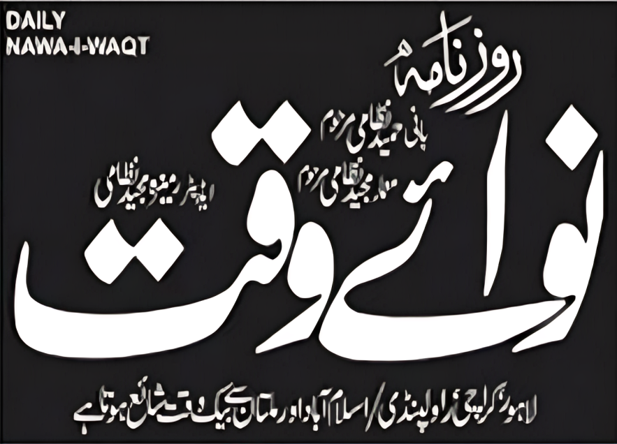
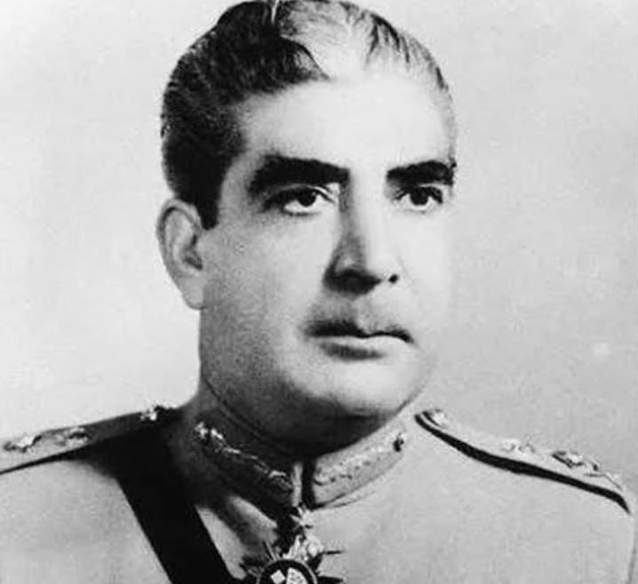
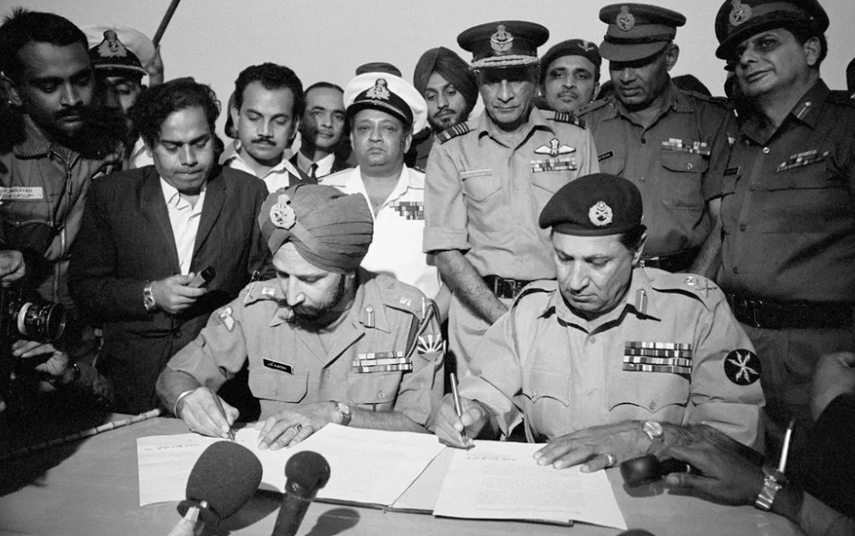
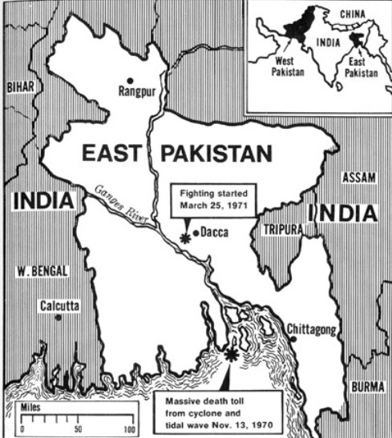

INDIAN ARMY ENTERS DHAKA
|
 NAWA-I-WAQTThe Voice of the Nation |
 |
EAST PAKISTAN SITUATIONRAWALPINDI:Rawalpindi: The President has announced that while a temporary arrangement has been reached in East Pakistan, the war on the Western front continues with full force. The enemy's treacherous attack on our sacred soil will be repelled.Officials stated that the armed forces remain fully alert and determined to defend the sovereignty and territorial integrity of Pakistan. Military commanders have assured the nation that all necessary measures are being taken to safeguard key cities, communication lines, and strategic positions. Reinforcements have been deployed, and supplies are being delivered to ensure that troops remain prepared for any further aggression.Reliable sources confirm that Indian forces have breached the outskirts of Dhaka. However, our brave soldiers are fighting tooth and nail to defend every inch of the motherland. Reports from the front lines highlight the courage and sacrifice of the armed forces, who continue to resist heavy pressure with remarkable determination. The situation remains fluid, and the government urges all citizens to stay united and support the troops in this critical time. Reliable sources confirm that Indian forces have breached the outskirts of Dhaka. However, our brave soldiers are fighting tooth and nail to defend every inch of the motherland. |
"WAR SHALL CONTINUE: FINAL VICTORY WILL BE OURS, GOD WILLING"
- President's Resolve in the Face of Aggression
|
 DHAKA FRONT: Smoke rises from the outskirts of the city as heavy artillery shelling continues. |
UN SECURITY COUNCILThe United Nations is in deadlock as the Soviet Union exercises its veto power, blocking the ceasefire resolution proposed by the US and China. ENEMY LOSSES
|
SUCCESSFUL AIR ATTACK ON RAILWAY STATION
|
 Map showing borders of China, Nepal, and East Pakistan. |
CHINA'S STATEMENTThe People's Republic of China has severely condemned the Indian incursion, calling it a gross violation of international sovereignty and regional stability. Beijing promises full material support and has expressed strong solidarity with Pakistan during this critical period.Chinese officials stated that any act of aggression threatens peace in the region and undermines diplomatic efforts aimed at maintaining harmony among neighboring states. They emphasized that disputes should be resolved through dialogue rather than force, and warned that continued hostilities could have serious consequences for regional security The People's Republic of China has severely condemned the Indian incursion, calling it a gross violation of international sovereignty and regional stability. Beijing promises full material support and has expressed strong solidarity with Pakistan during this critical period.Chinese officials stated that any act of aggression threatens peace in the region and undermines diplomatic efforts aimed at maintaining harmony among neighboring states. They emphasized that disputes should be resolved through dialogue rather than force, and warned that continued hostilities could have serious consequences for regional security. . |
WORLD REACTIONDemonstrations have been reported in various capitals supporting the territorial integrity and sovereignty of Pakistan. Citizens, student groups, and community organizations gathered in public squares to express solidarity, raising slogans and holding banners calling for peace and justice. Many speakers at these gatherings urged the international community to take notice of the situation and work toward an immediate de-escalation of hostilities.The Muslim world watches with bated breath as events continue to unfold. Leaders from several friendly nations have voiced concern over the rising tensions and emphasized the need to protect civilian lives and maintain stability in the region. Messages of support and prayers have poured in, highlighting the deep cultural and religious bonds shared with Pakistan.Diplomatic circles report increased activity at global forums, where calls for restraint and dialogue are growing stronger. Observers believe that international pressure may play a key role in preventing further conflict and encouraging a peaceful resolution. Across many countries, the general sentiment remains one of sympathy, unity, and hope for a swift return to peace. |